Setting up Dashboards
Dashboards are the central visualization layer in Zabbix. They bring together widgets self-contained panels that each display a specific type of data, onto a single, configurable canvas that updates in real time. Whether you are building an operations center screen showing the health of your entire infrastructure, or a focused view for a single application team, dashboards give you the flexibility to present exactly the data that matters.
This chapter covers everything you need to create, configure, and manage dashboards in Zabbix 8.0: from the basic mechanics of the dashboard editor, through each available widget type, to sharing dashboards with other users and embedding them in template definitions.
Understanding Dashboard Types
Zabbix 8.0 has two distinct categories of dashboards, and understanding the difference up front will save confusion later.
Global dashboards are created and managed under Dashboards in the main menu. They exist independently of any particular host and can show data from any combination of hosts, host groups, or items you choose. This is the most common type. This is the one you reach when you click Dashboards in the left-hand navigation.
Template dashboards are defined inside a template and are automatically instantiated for every host that links to that template. When you view a host's dashboards (via Monitoring → Hosts → Dashboards), what you see are the rendered instances of those template dashboards, with all widget item references resolved against that specific host. Template dashboards are discussed in a dedicated section at the end of this chapter.
The Dashboard List
Navigate to Dashboards in the left hand menu. The page shows a list of all dashboards you have access to. Each row shows the dashboard name, the owner, and whether it is shared.
From this list you can:
- Click a dashboard name to open it in view mode.
- Use the Create dashboard button in the top-right corner to start a new one or click import to import an existing one. ( If you have the correct permissions)
- Click the row's action menu (the three-line icon) to share, edit, clone, delete, or change sharing settings. (Again only if you have those permissions)
- Since Zabbix 8.0 there is also the option to Export.
Zabbix ships with a default dashboard called Global view that gives a good starting point. You can edit it or leave it as is and create additional dashboards for specific purposes.
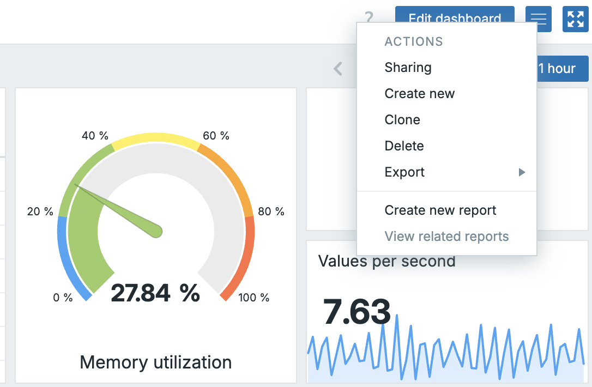
11.1 Actions menu
Creating Your First Dashboard
Click Create dashboard. A dialog appears asking for:
- Name: the title shown in the page header and the dashboard list.
- Owner: the Zabbix user who owns the dashboard. Only the owner (and administrators) can edit it by default.
- Display period: how long the dashboard auto-cycles pages before returning to the first. This is relevant only if you add multiple pages.
- Start slideshow automatically: When selected Zabbix will automatically start the slideshow if you have multiple pages.
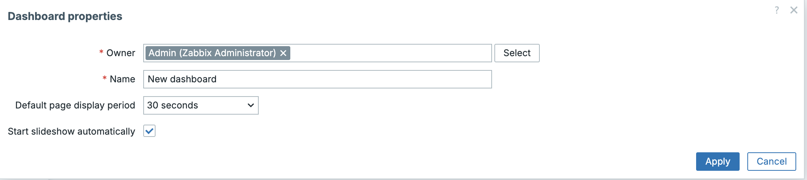
11.2 Create Dashboard
Click Apply to create the dashboard and enter edit mode.
Dashboard Edit Mode
Edit mode is where all layout and widget work happens. The interface changes in several important ways when you enter it:
A toolbar appears at the top of the page with these controls:
- Add widget: opens the widget picker.
- Add page: appends another page (tab) to the dashboard.
- Paste widget: available after you have copied a widget.
- Cancel / Save changes: discard or commit your edits.
The canvas itself becomes a grid. Widgets snap to this grid when you place or resize them. You can drag a widget by its header to reposition it, and drag the resize handle (bottom corner of each widget) to change its dimensions.
To exit edit mode without saving, click Cancel. To commit all changes, click Save changes.
Info
Changes are not saved automatically. If you close the browser tab while in edit mode, unsaved work is lost.
Adding and Configuring Widgets
Click Add widget to open the widget picker. It lists all available widget types. Select one and a configuration dialog opens.
Every widget shares a set of common fields at the top of the dialog:
| Field | Description |
|---|---|
| Type | The widget type. Changing this resets the type specific fields. |
| Name | An optional label displayed in the widget header. If left blank, the default title for that widget type is used. |
| Refresh interval | How often the widget polls for new data. Options range from No refresh to 15 minutes. The default varies by widget type. |
Below these shared fields, each widget type exposes its own specific configuration options. These are described widget by widget in the next section.
Once you have configured a widget, click Add (for new widgets) or Apply (for edits). The widget appears on the canvas at a default size. You can then reposition and resize it.
To edit an existing widget, click the pencil icon in its top-right corner while in edit mode. To delete it, click the X icon.
Widget Reference
Zabbix 8.0 ships with many widget types. This section describes each one, what it is best used for, and its key configuration options.
Action log
Displays a log of actions (alert notifications, remote commands) that Zabbix has executed. Useful for an audit style view of what your alerting system has been doing.
Key options: filter by time period, media type, status, and recipient.
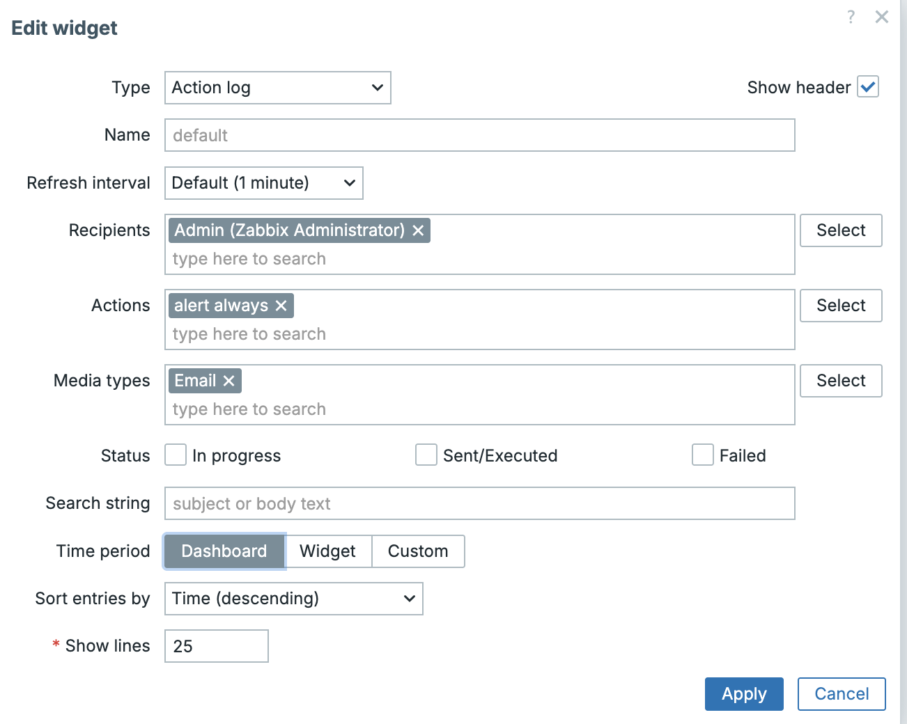
11.3 Action Log widget
Clock
Shows the current date and time, either as a digital or an analog clock face. You can configure it to show the time in any timezone rather than the browser's local time. Useful for teams operating across time zones to know the server time.
Key options: Clock type (digital / analog), Time type (local / server / specified timezone).
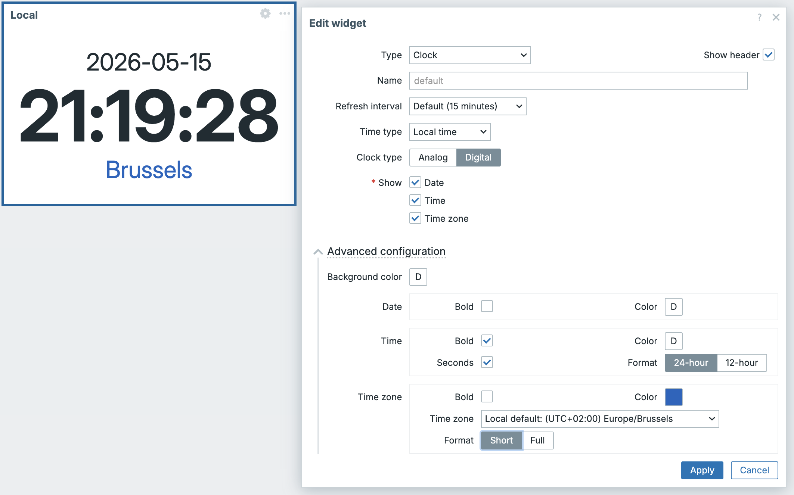
11.4 Clock widget
Discovery status
Displays a summary of the last network discovery run: how many devices were found and in what state. Useful on infrastructure overview dashboards.
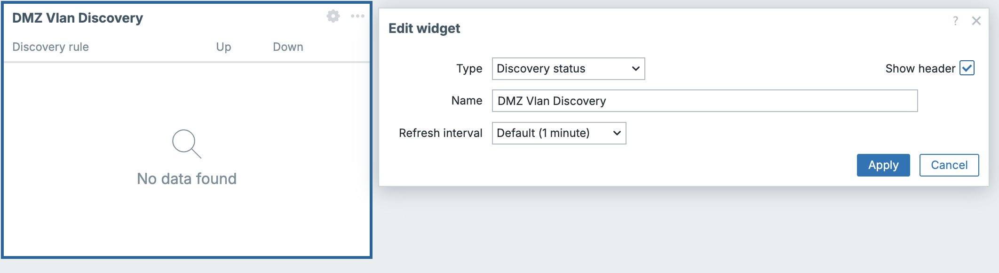
11.5 Discovery status
Favourite graphs
Shows a list of manually bookmarked graphs (custom graphs that a user has marked as favourites). This widget is personal, it reflects the graphs favourited by the user currently viewing the dashboard.
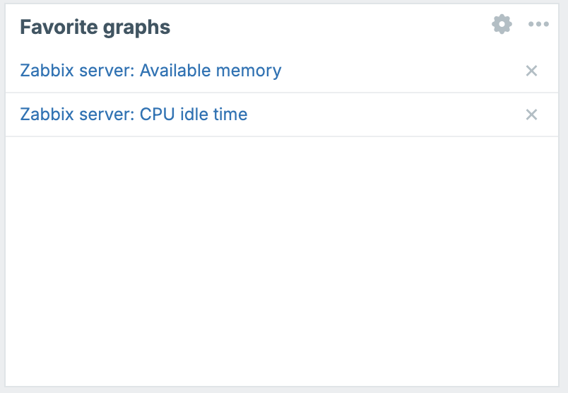
11.6 Favourite Graphs
Favourite maps
The network map equivalent of Favourite graphs. Shows the user's bookmarked network maps.
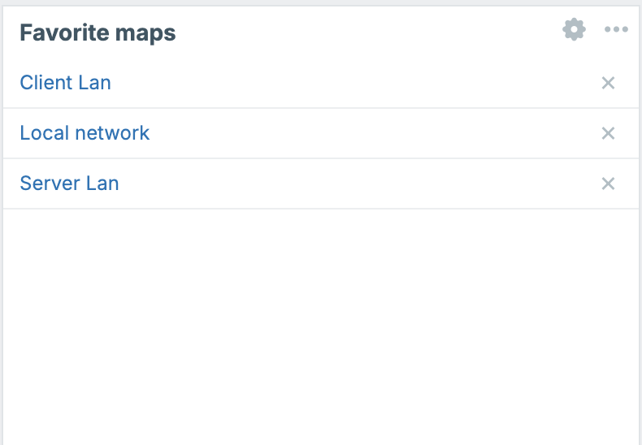
11.7 Favourite Maps
Gauge
Renders a single item's current value as a gauge (180º or 270º). Effective for KPI-style displays where you want an instant visual indication of whether a value is in a healthy range.
Key options: item to display, minimum and maximum values for the scale, threshold zones with configurable colours, needle/arc display style.
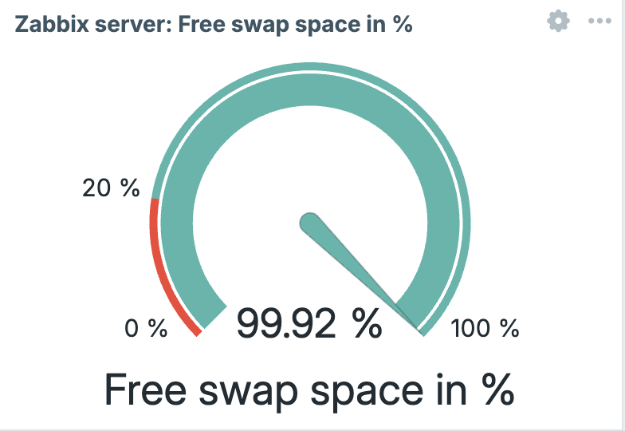
11.8 Gauge
Geomap
Places hosts on a geographic map based on their inventory latitude/longitude fields. Hosts are shown as coloured markers that reflect their current problem severity. Click a marker to drill down to the host.
Key options: host groups to include, the initial map center and zoom level.
Prerequisite: Host inventory must be populated with latitude and longitude values for the Geomap to place hosts correctly.
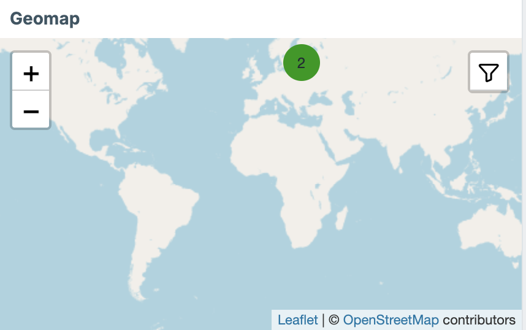
11.9 Geomap
Graph
The primary graph widget for Zabbix 8.0. Renders a time-series SVG graph and is the recommended widget for displaying metric data over time. It supports multiple data sets, color customization, and is fully interactive in view mode (you can zoom and pan the time range).
Key options:
- Data set: add one or more data sets, each selecting hosts/items via a pattern or direct selection. Each data set gets its own color, draw type (line, points, staircase and bars), and y-axis assignment.
- Display: toggle whether to show the working time overlay, simple triggers, hostnames and percentiles.
- Time period: either follow the dashboard's global time selector or set a fixed period.
- Axes: configure left/right y-axis ranges, labels, and units.
- Legend: control visibility and placement of the legend.
- Problems: Show problems and Severity of selected hosts
- Override host: allows the widget to be driven by a dynamic host selection from a Host navigator widget on the same dashboard page (see below).
This widget is preferred over the legacy Graph (classic) for all new dashboards. It is built on the newer SVG rendering engine introduced in Zabbix 6.0 and offers far more display options.
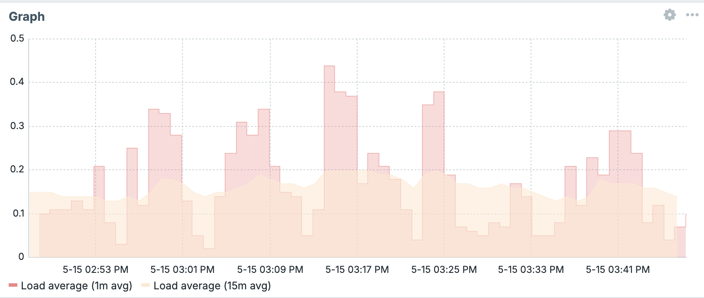
11.10 Graph
Graph (classic)
Renders a previously defined custom graph (created under Data collection → Hosts/Templates → Graphs) or a simple graph for a single item. It uses the older PNG-based rendering engine.
Use this widget when you need to display a named custom graph that you have already defined elsewhere and do not want to reconfigure in the widget itself. For new visualization work, prefer the Graph widget.
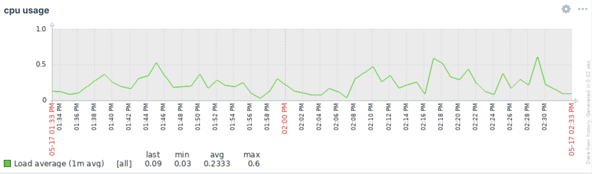
11.11 Classic Graph
--
Graph prototype
Displays graphs that were created by Low-Level Discovery (LLD) graph prototypes. As new entities are discovered (interfaces, disks, etc.), their automatically generated graphs appear in this widget.
Key options: select the LLD items or the graph prototype whose results you want to display.
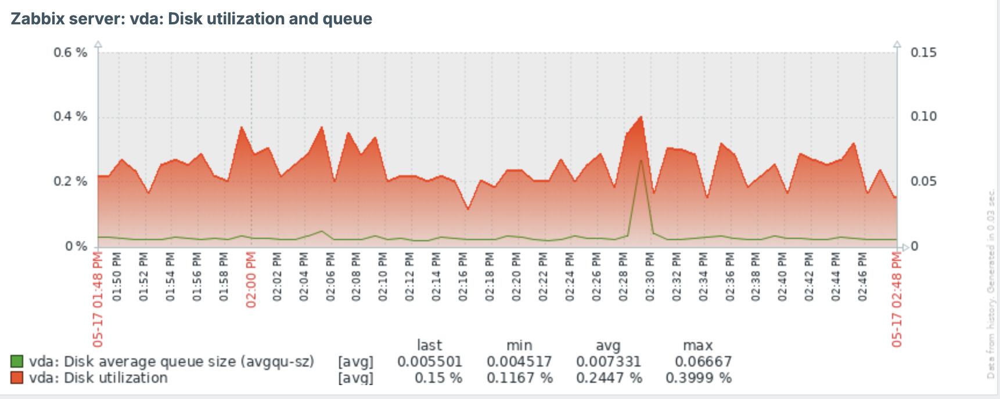
11.12 Graph prototype
Honeycomb
Displays a set of items as a grid of coloured hexagonal cells. Each cell represents one host/item combination, and its color reflects the item's current value relative to configured thresholds. Good for a dense, at-a-glance health view over many similar entities.
Key options: hosts/items to include, threshold definitions that control cell colouring.
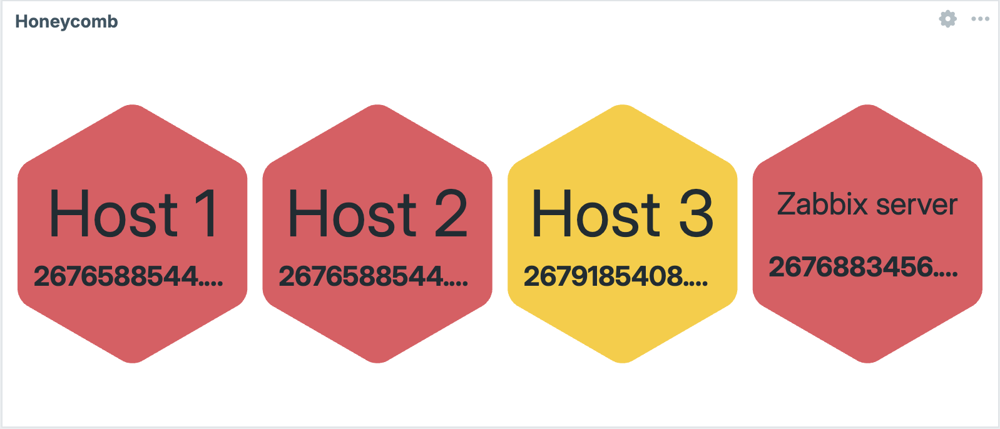
11.13 Honeycomb
Host availability
Shows a summary bar chart of how many hosts in selected host groups are available, not available, unknown, or disabled per interface type (Zabbix agent, SNMP, JMX, IPMI).
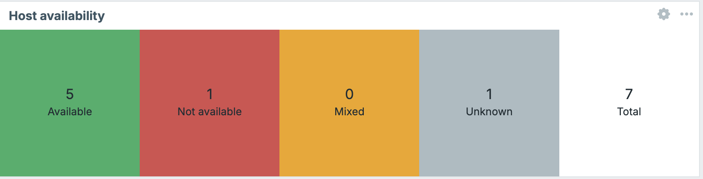
11.14 Host availability
Host card
Displays a compact summary card for a single host: its name, availability indicators, tags, and current problem count per severity. Useful as a focused panel for a host specific dashboard page.
Key options: the host to display, which details to include.
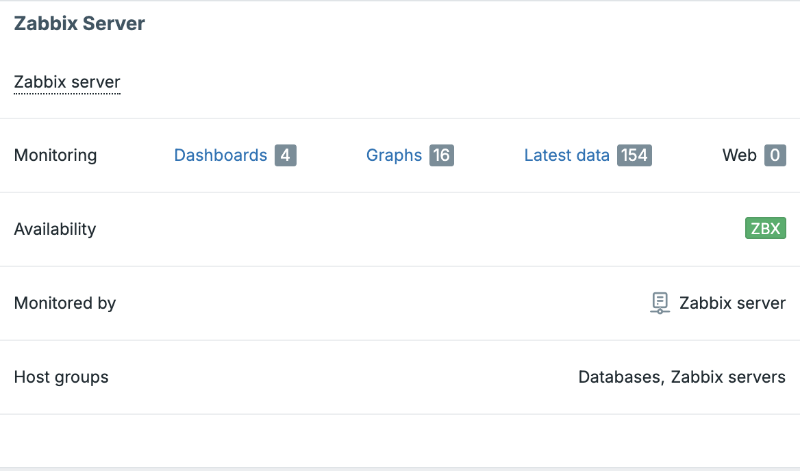
11.15_host card
Host navigator
A dynamic host selector widget. It renders a filterable, searchable list of hosts (filtered by host groups,host patterns, tags, or severity). When a user selects a host from the list, other widgets on the same dashboard page that have Override host enabled will update to show data for that selected host.
This widget is powerful for building a single dashboard that can be used to inspect any host by selection, without needing a separate dashboard per host.
Key options: host groups, tags, and problem severity filters to limit which hosts appear in the list.
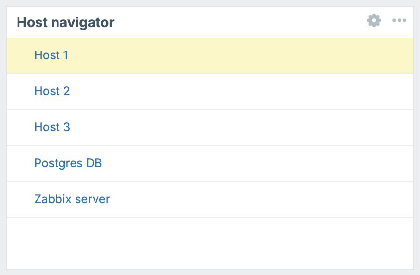
11.16 Host Navigator
Item card
Similar to Host card, but focused on a single item rather than a whole host. Displays the item's current value, units, and a small sparkline trend.
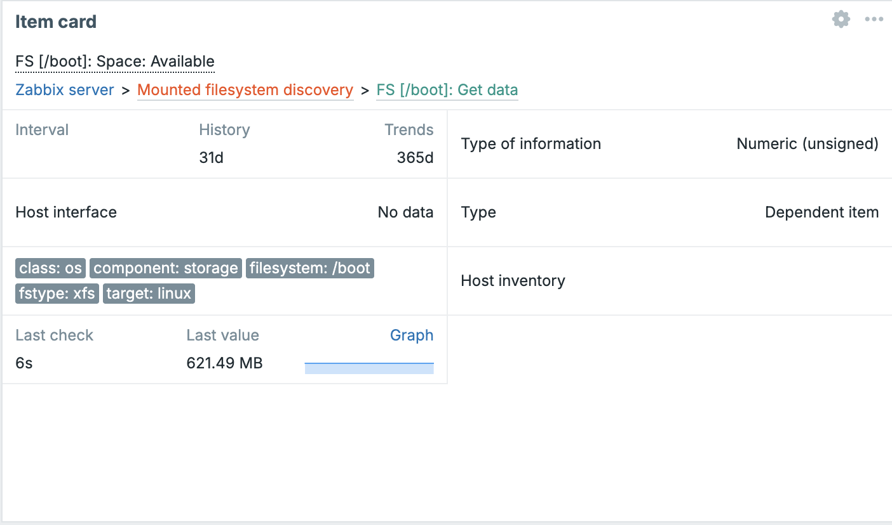
_ch11.17 Item Card__
Item history
Displays a table of recent values for one or more items, essentially a compact view of the Latest data history for selected items. Useful for keeping an eye on discrete event-like metrics (log entries, state changes).
Key options: items to display, number of rows to show, sort order.
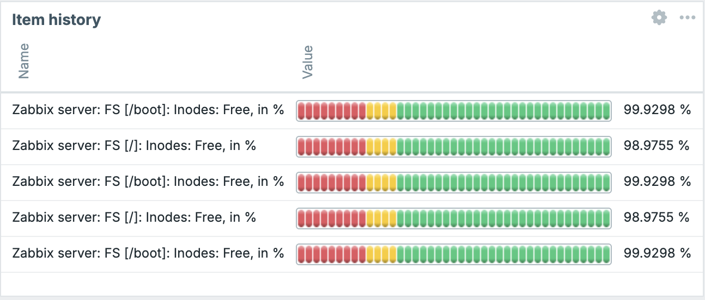
ch11.18 Item History
Item navigator
The item-level equivalent of Host navigator. Renders a searchable list of items and allows other widgets on the page to be driven by the user's selection.
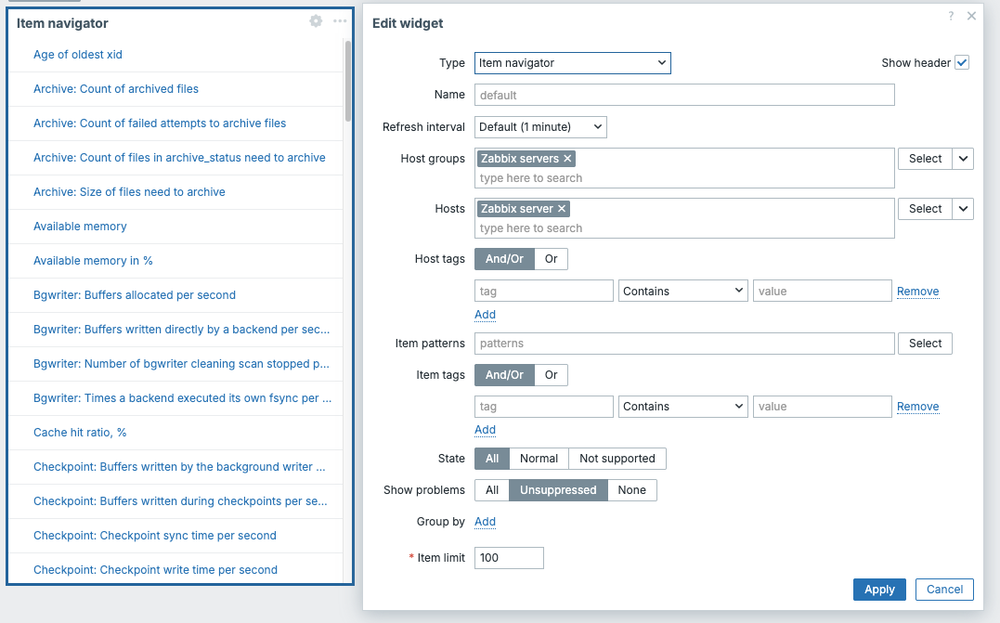
ch11.19 Item Navigator
Item value
Displays the current (most recent) value of a single item as large text. Optionally shows a sparkline below the value, and supports threshold based colouring so the widget background or text changes color when the value crosses a threshold.
This is one of the most versatile widgets for building executive or NOC dashboards ,a single value, big and clear, with immediate color feedback.
Key options: item to display, units override, decimal places, threshold zones, sparkline on/off.
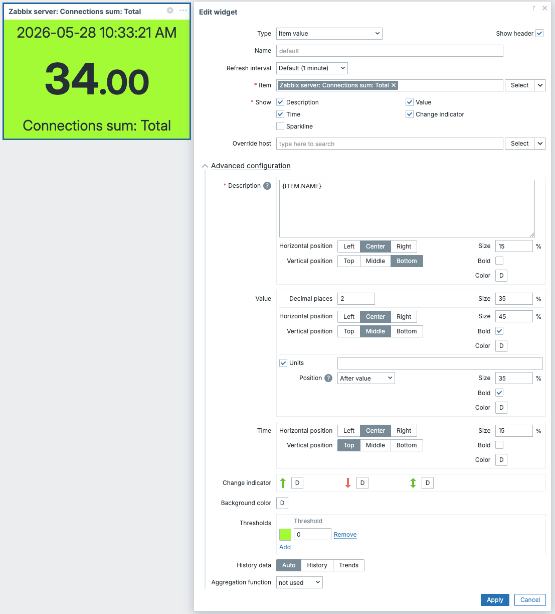
ch11.20 Item Value
Map
Embeds a Zabbix network map into the dashboard. The map displays hosts, links, and connection states, and updates in real time as problem states change.
Key options: which map to display, whether to fit it to the widget size automatically.
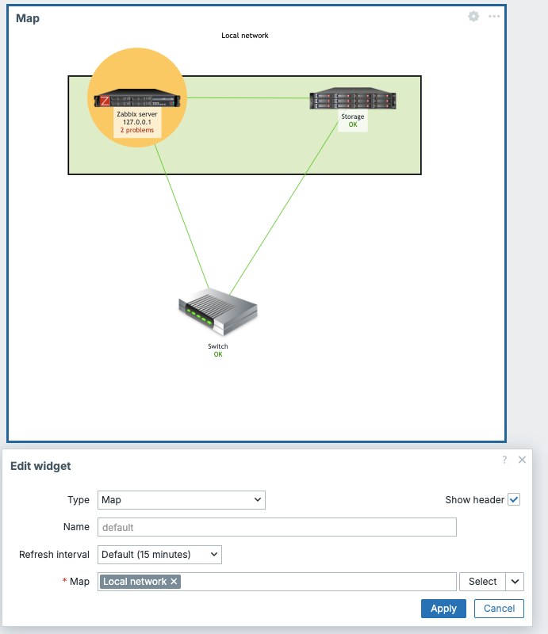
ch11.21 Map
Map navigation tree
Displays a hierarchical tree of network maps, allowing users to navigate between maps by clicking items in the tree. This pairs with the Map widget: selecting a map in the tree updates the map displayed in the Map widget on the same page.
Key options: the tree definition (you build the hierarchy of maps manually).
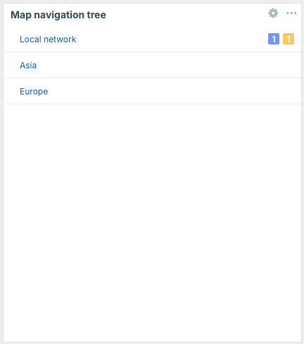
ch11.22 Map Navigation
Pie chart
Renders item values as slices of a pie or donut chart. Useful for showing proportional distribution (disk usage breakdown, traffic by interface, etc.).
Key options: data sets (host/item pairs that become slices), colours, whether to show as pie or donut, legend.
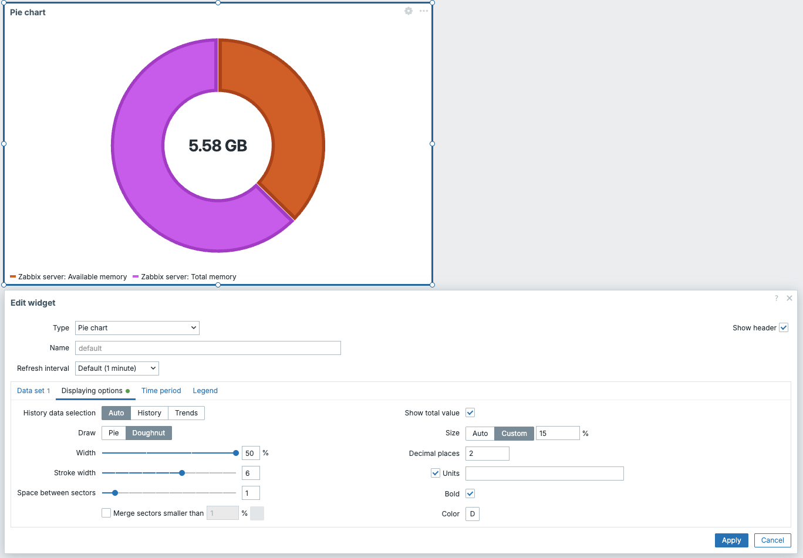
ch11.23 Pie
Problem hosts
Shows a summary table of hosts that currently have active problems, grouped or filtered by host group. Each row shows a host name and a count of problems per severity level, color-coded.
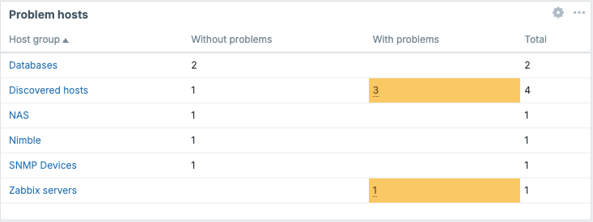
ch11.24 Problem Hosts
Problems
Displays a live list of current active problems, similar to the Monitoring → Problems page but embedded as a widget. You can apply the same filters available on that page: host group, host, severity, tags, and so on.
Key options: filters for host group, host, severity, tags; whether to show problem age; number of rows to display.
This is one of the most commonly placed widgets on any operational dashboard.
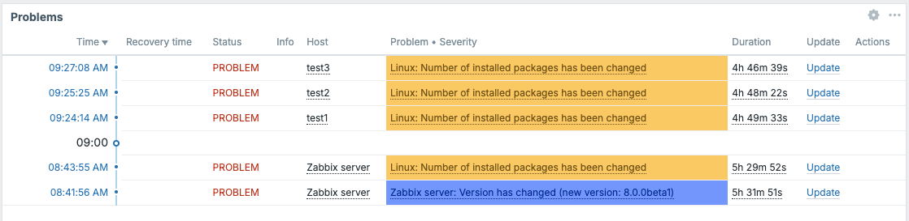
ch11.25 Problems
Problems by severity
Shows a single summary bar (or count cells) broken down by severity level (Disaster, High, Average, Warning, Information, Not classified). Gives an immediate count of active problems at each level across a selected scope.
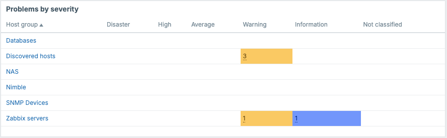
ch11.26 Problems By Severity
Scatter plot
Plots two item values against each other as dots on an X/Y plane. Useful for correlation analysis between two metrics.
Key options: X-axis item, Y-axis item, point size and color, axis labels.
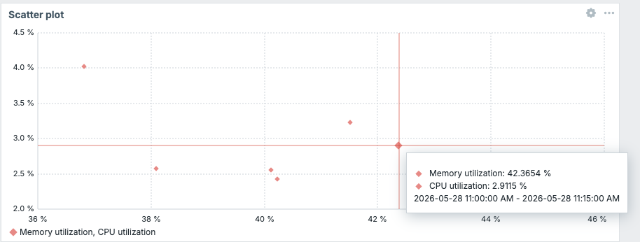
ch11.27 Scatter Plot
SLA report
Displays SLA compliance data for services defined in Zabbix's Service monitoring module. Shows SLI values and OK/problem time breakdowns for a selected SLA and time period.
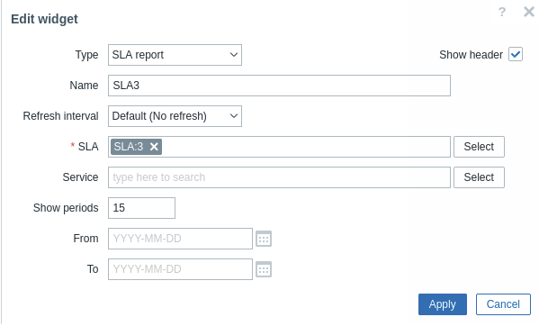
ch11.28 Sla Reports
System information
Shows key Zabbix server status figures: number of hosts, items, triggers, users logged in, required server performance, etc. Typically placed on an internal administration dashboard.
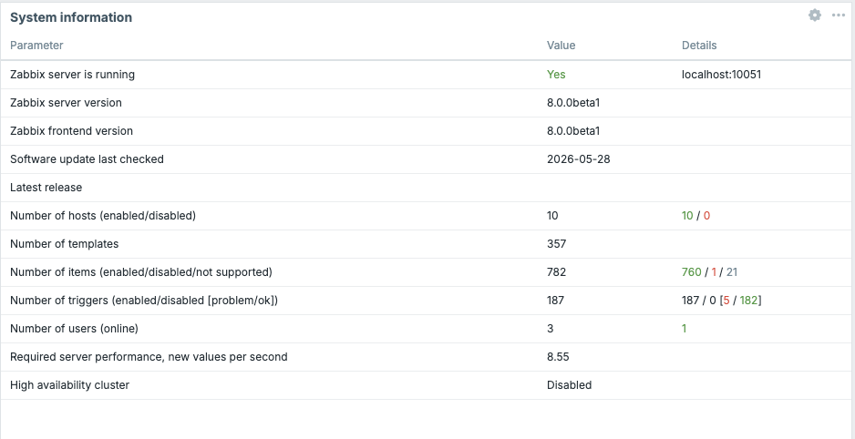
ch11.29 System Information
Top hosts
Displays a table of hosts ranked by the value of a specified item. For example, you can rank all hosts by their CPU utilization or by free disk space to quickly find the outliers.
Key options: items to rank by, host group filter, number of rows, sort order.
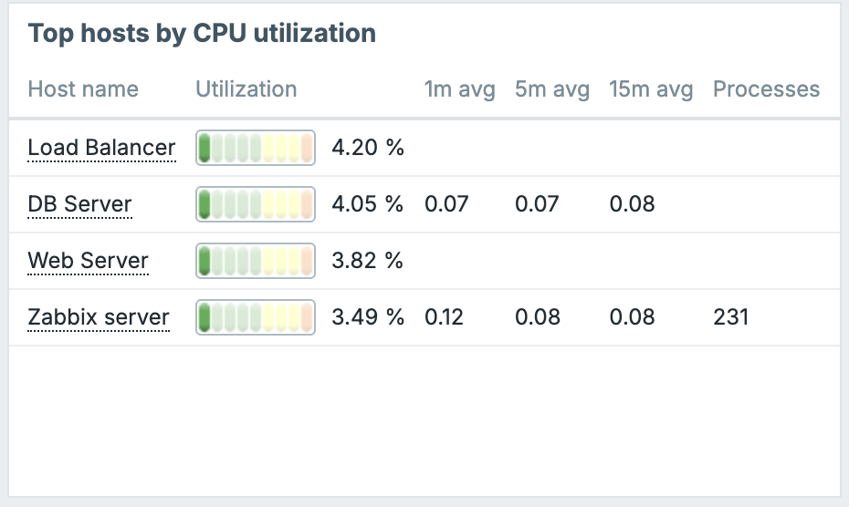
ch11.30 Top Hosts
Top items
Similar to Top hosts but item-centric: lists all item values matching a pattern across hosts, ranked by value.
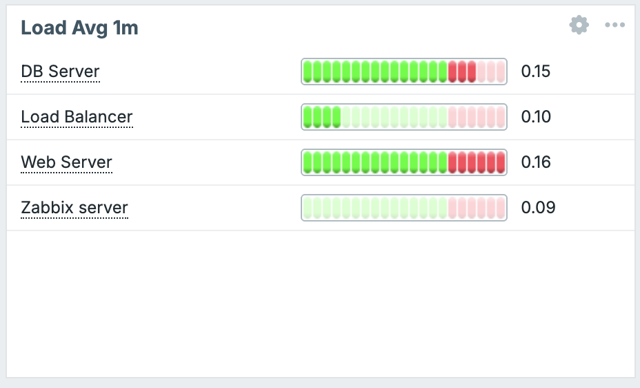
ch11.31 Top Items
Top triggers
Lists the triggers that have fired most frequently in the selected time period, ranked by event count. Useful for identifying noisy or chronic problem sources.
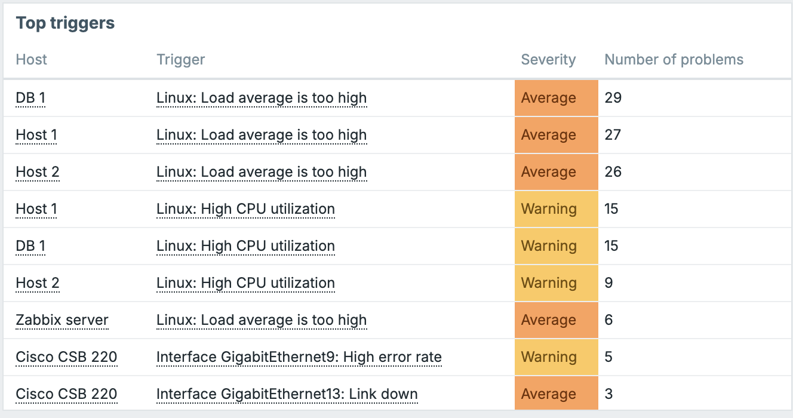
ch11.32 Top Triggers
Trigger overview
Displays a matrix grid: hosts on one axis, trigger names on the other, with each cell coloured by the trigger's current state. Good for a dense cross-host trigger health view.
Key options: host groups, trigger name filter, whether to show triggers in OK state.
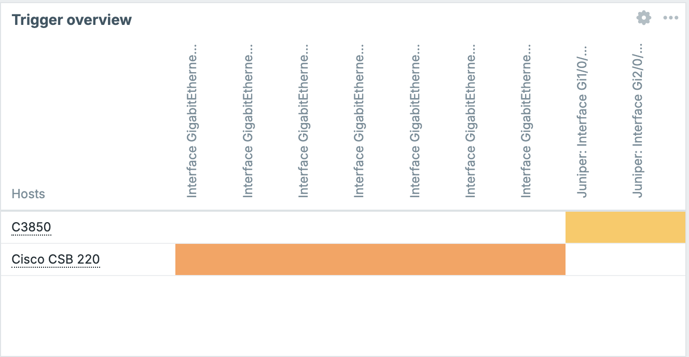
ch11.33 Trigger Overview
URL
Embeds an external URL in an iframe inside the widget. Useful for embedding external dashboards, documentation pages, or any web content alongside your Zabbix data.
Security note: The target URL must be accessible from the user's browser and must not set
X-Frame-Options: DENYor an equivalent CSP header, otherwise the browser will refuse to render it.
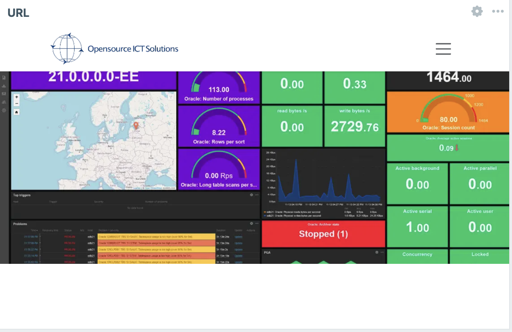
ch11.34 url
Web monitoring
Displays the results of Zabbix web scenario checks: which scenarios are OK, failed, or unknown, along with availability percentages and average response times.
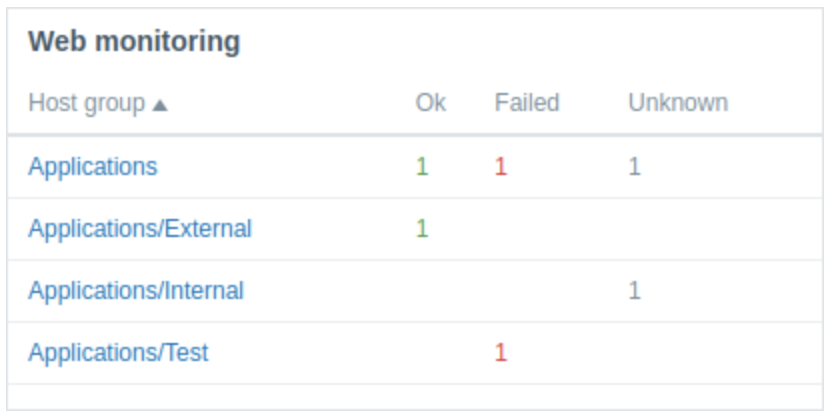
ch11.35 Web Monitoring
Multi-Page Dashboards
A single dashboard can contain multiple pages (tabs). Each page has its own independent canvas and its own set of widgets. Pages share the same dashboard name and settings, but their widget layouts are entirely separate.
To add a page in edit mode, click Add page. A new tab appears. You can rename a page by clicking on the 3 dots next to it's label. Reorder pages by dragging their tabs.
When a dashboard has multiple pages, a Display period setting controls how long each page is shown before automatically cycling to the next, useful for NOC screens that rotate between views. You can set this per dashboard when creating or editing the dashboard properties, and also override it per page in the page settings.
To delete a page, click on the 3 dots in its tab and choose Delete page. Note: a dashboard must always have at least one page.
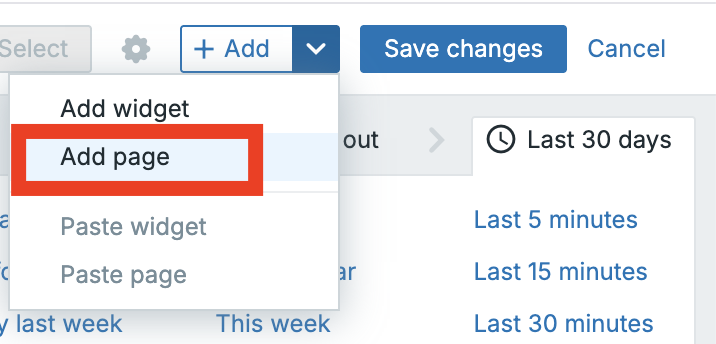
ch11.36 Add Page
The Dashboard Time Selector
Most data-displaying widgets (Graph, Problems, Top hosts, etc.) respect the dashboard's global time selector. This is a time range control in the top-right corner of the dashboard page that lets you shift all widgets' data view to a different period simultaneously.
You can set a relative period (e.g., Last 1 hour, Last 7 days) or an absolute range with specific start and end timestamps. Changes to the time selector apply instantly to all widgets that use it.
Individual widgets can override this — in a Graph widget's configuration, for example, you can choose Custom for the time period and set a fixed range that will not be affected by the global selector. This is useful when you want one panel to always show the last 24 hours while the rest of the dashboard follows a manually adjusted range.
Sharing Dashboards
By default a dashboard is visible only to its owner. To make it accessible to other users, open the dashboard, click the actions menu (3 horizontal lines) for the dashboard, and select Sharing.
The sharing dialog offers two models:
Private: the default. Only the owner can see and edit the dashboard. You can explicitly grant individual users or user groups either view-only or edit access by adding them to the permissions list.
Public: the dashboard becomes visible to all Zabbix users who have access to the Dashboards section. Public dashboards can still be edited only by the owner (and administrators), unless you explicitly grant edit permission to others.
To configure: set the type to Public or add users/user groups with Read or Read-write permission as needed, then click Update.
Exporting and Importing Dashboards
Dashboards can be exported as YAML files since Zabbix 8 and imported on the same or a different Zabbix instance of the same version. This is useful for distributing dashboard templates, backing up configurations, or sharing dashboards with the community.
To export: in the dashboard, select the actions menu (3 horizontal lines),
then click the Export button and choose the format you like. Or go to the
dashboard list select all the dashboards you like and click on th export button.
Zabbix downloads a .yaml, xml or json file containing the full dashboard definition
including all widget configurations.
To import: click the Import button in the top right of the dashboard list, select your YAML file, and choose which elements to import. If a dashboard with the same name already exists you will be prompted to overwrite it or create a new one.
Template Dashboards
Template dashboards live inside a template definition rather than in the global dashboard list. They exist so that when you link a template to a host, that host automatically gets its own dashboard with pre-configured widgets already pointed at the right items for that host.
Creating a template dashboard
Navigate to Data collection → Templates, open a template, and click the Dashboards tab. Click Create dashboard.
The dashboard editor looks identical to the global dashboard editor, with one important difference: widgets that reference items use template-level item references rather than absolute host/item IDs. This means the widgets are automatically resolved to the correct host-specific items when a host links to the template.
For example, a Graph widget on a template dashboard would reference the template
item system.cpu.util and when you view the dashboard for Host A, it shows
system.cpu.util collected from Host A, not from the template itself.
Viewing template dashboards for a host
Go to Monitoring → Hosts, find your host in the list, click the Dashboards item in the host's row action menu (or use the Dashboards link in the host's detail view). This opens a view of all template dashboards that have been instantiated for this host, one tab per dashboard.
You cannot edit template dashboards from here. To change the definition, go back to the template.
Building a Practical Example: Linux Server Overview Dashboard
To put it all together, here is a step by step walkthrough of building a useful
dashboard for monitoring a Linux server. This assumes you have a host monitored
with the standard Linux by Zabbix agent template, so items like system.cpu.util,
vm.memory.size[available], and filesystem usage data are already being collected.
Step 1 — Create the dashboard
Go to Dashboards → Create dashboard. Name it Linux Server Overview, set yourself as owner, click Apply.
Step 2 — Add a Problems widget
Click Add widget, select Problems. Set Host groups to the group containing your Linux servers. Set Severity to show from Warning and above. Set rows to 10. Click Add. Resize it to span the top of the dashboard, roughly 24 columns wide and 4 rows tall.
Step 3 — Add an Item value widget for CPU
Click Add widget, select Item value. In Item, search for and select
system.cpu.util on your host. Set the units to %. Enable the sparkline. Add a
threshold: 0–75 = green, 75–90 = orange, 90–100 = red. Name it CPU Utilization.
Click Add. Place it below the Problems widget on the left.
Step 4 — Add an Item value widget for Memory
Repeat the above for vm.memory.size[pavailable] (percent available memory).
Invert the threshold logic: 0–10 = red, 10–25 = orange, 25–100 = green. Name it
Free Memory. Place it next to the CPU widget.
Step 5 — Add a Graph widget for CPU over time
Click Add widget, select Graph. Click Add data set, search for system.cpu.util
on your host. Accept the defaults. Set the Time period to Dashboard (so it
follows the global selector). Name it CPU History. Resize it to be wide and
place it in the middle row.
Step 6 — Add a Graph widget for network traffic
Add another Graph widget. Add two data sets: one for net.if.in[eth0] and one
for net.if.out[eth0]. Give them different colours. Name it Network Traffic.
Place it next to the CPU history graph.
The name eth0 can be different on your system.
Step 7 — Save
Click Save changes. Your dashboard is now live. Use the time selector in the top right to zoom out to Last 24 hours and verify all widgets populate correctly.
Tips and Best Practices
Design for your audience. An operations center screen viewed from a distance needs large text and bold color cues (Item value, Gauge, Problems by severity). A deep-dive analysis dashboard for an engineer can be denser and graph-heavy.
Use the Host navigator for flexible dashboards. Rather than creating a separate dashboard per host, a single dashboard with a Host navigator + Graph/Item value widgets set to Override host lets one dashboard serve your entire fleet.
Keep page count manageable. Auto-cycling works well for NOC displays, but for interactive use more than 3–4 pages makes navigation clumsy. Consider splitting logically distinct views into separate dashboards instead.
Avoid the URL widget for sensitive data. Since the URL is loaded in the viewer's browser, ensure that anything embedded does not expose data that the Zabbix permissions model would otherwise restrict.
Export dashboards you have invested time in. A YAML export is an effective backup and makes it easy to share your work with other Zabbix administrators or contribute it back to the community.
Use template dashboards for consistency. If you monitor many instances of the same technology (Linux hosts, Apache servers, PostgreSQL databases), define the dashboard once in the template and get it automatically for every host.
Conclusion
Dashboards are one of the most powerful ways to present monitoring data in Zabbix. By combining widgets, graphs, maps, status indicators, and business focused metrics, you can transform raw monitoring information into clear and actionable insights.
In this chapter, you learned how to create and customize dashboards, organize information for different audiences, and use visualization techniques to highlight the most important aspects of your infrastructure. Well designed dashboards help operators detect issues faster, enable administrators to monitor system health efficiently, and provide management with a high-level overview of service availability and performance.
Remember that the best dashboard is not necessarily the one with the most widgets, but the one that presents the right information to the right people at the right time. By carefully designing your dashboards, you can significantly improve visibility, reduce response times, and make better operational decisions based on your monitoring data.
Questions
- What is the purpose of a dashboard in Zabbix?
- What factors should you consider when designing an effective dashboard?
- How can dashboard permissions affect what users are able to see?